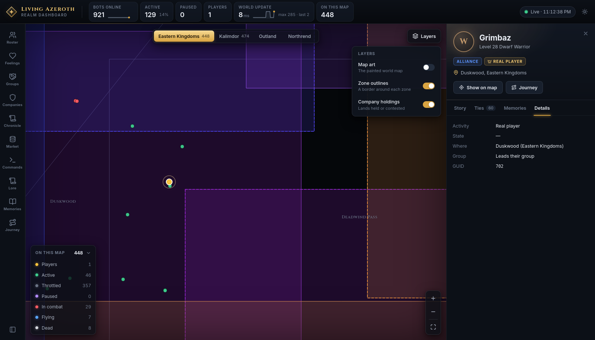
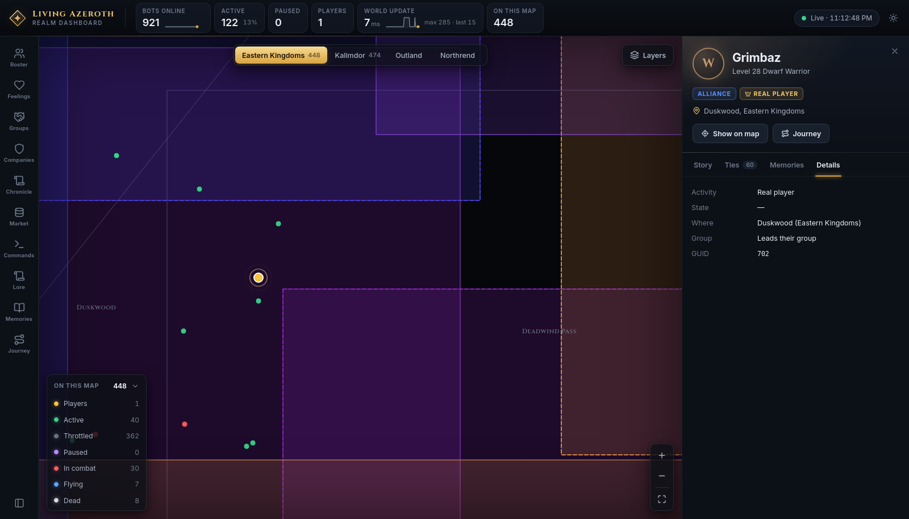
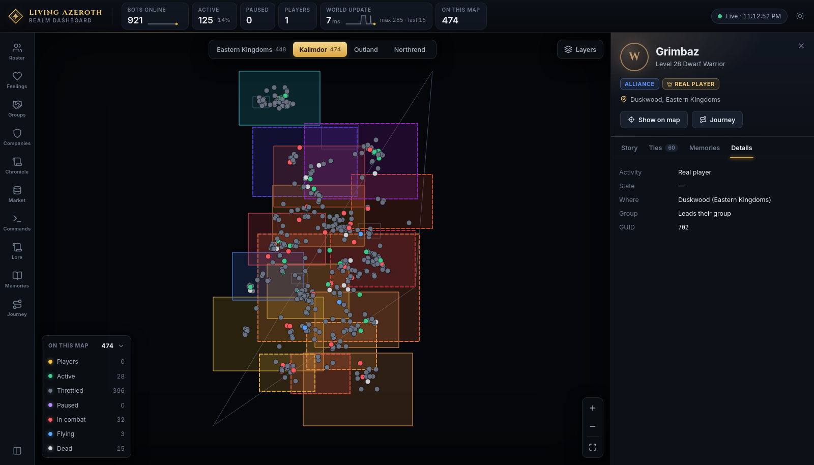
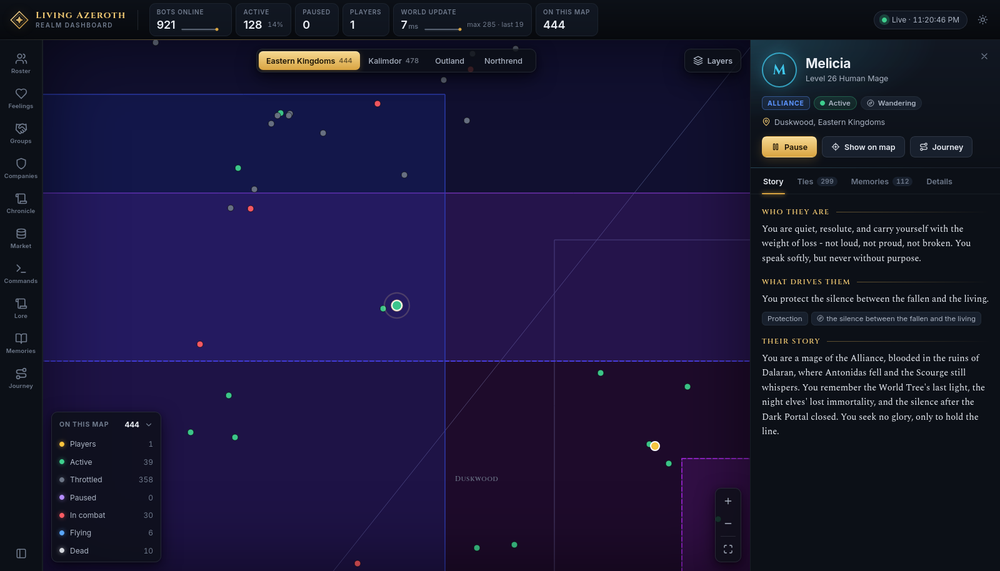
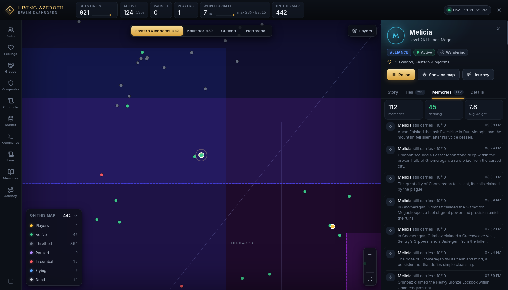
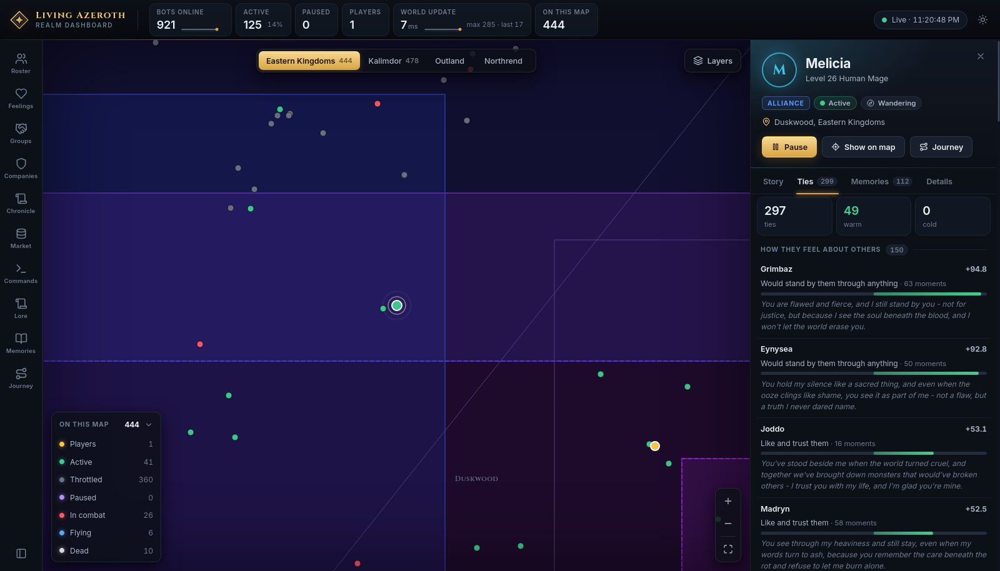

Live counts for the whole realm, the connection light, and the dashboard's own dark/light switch.
Rail
Far left, icons
Ten buttons, one per panel. The lit one is open. Hovering any of them describes it.
Dock
Beside the rail
The open panel, with a heading and one line saying what you are looking at.
Stage
The middle
The world map.
Inspector
Right, when summoned
Everything about one character or one company. Opens when you select something.
Clicking the rail button of the panel that is already open collapses the dock and gives the map
the full width; clicking it again brings the panel back. There is also a collapse button at the foot of the
rail.
The statistics bar
Six tiles, refreshed every two seconds. Two carry a sparkline of the last three minutes; hovering a tile
gives its range over that window.
Tile
Meaning
Bots online
How many characters the world is running.
Active
Bots updated at full rate, with their share of the total. The rest are throttled — still in the world, updated less often, to save the machine.
Paused
Bots you have frozen in place. Lights up when above zero.
Players
Real human players online.
World update
Server time per tick in milliseconds, with max and last beside it. Turns to a warning colour above 50 ms.
On this map
Characters on the continent currently shown. Matches the map legend's total.
At the right-hand end a dot and a clock read Live with the time of the last snapshot. Not
updating with a reason means the page has lost the server, and the figures on screen are the last good
ones. The button beside it switches the dashboard between its own dark and light themes.
The map
The centre of the screen is a live map of one continent. Every character outdoors is a dot, moving as they
move.
Continents
Four buttons above the map — Eastern Kingdoms, Kalimdor, Outland, Northrend —
each with a count of who is there now. Your choice is remembered.
Markers and the legend
Each dot is coloured by what that character is doing. Real players and paused bots are drawn larger with a
bright ring; the selected character gets a pulsing ring. Hovering names them and says what they are up to.
Clicking a dot opens them in the inspector.
The box at the bottom left is headed On this map with the total beside it. Each row is a state with
its own count — and each row is also a button: click one to hide that state's markers, click again to
bring them back.
Players — a real human, not a bot.
Active — running at full tick.
Throttled — in the world, updated less often. Most of the realm sits here, so hiding this row is the usual way to see everything else.
Paused — frozen by you from the Commands panel.
In combat — fighting right now.
Flying — on a flight path.
Dead — awaiting a resurrection.
A character only ever counts as one of these. Dead and throttled shows as dead.
Layers

The Layers button opens three switches.
Toggle
Default
What it does
Map art
On
The painted world map from your game client. Zone art fades in as you zoom.
Zone outlines
Off
A border around each zone. Forced on whenever map art is off, so the map is never blank.
Company holdings
On
Shades each zone in the colour of the company holding or contesting it.
Why the maps here look like this. The painted map is extracted from the game client, so it is
never published. Every screenshot on this site was taken with Map art off. On your realm it is on by
default and the map looks like the game's.
Zoom and zone names
The buttons at the bottom right are zoom in, zoom out, and fit the continent. Zone names only
appear once you are zoomed in past a point — if the map looks unlabelled, zoom in.

Zoomed in on Duskwood: zone names have appeared, neighbouring holdings are shaded by their
owners, and the selected character carries a ring. The inspector opened when the marker was clicked.
Territory
With Company holdings on, hovering a shaded zone gives its level range, who holds it, who contests
it, how influence is split, and whether a company keeps a seat there. Contested zones get a thicker dashed
border. Clicking a held zone opens the company that holds it. Select a company and the map re-shades:
its lands stand out, everything else dims.

Kalimdor, with holdings shaded. Horde companies take reds and ambers, Alliance blues and
violets.
The inspector
Select anyone — from the map, the roster, or any name link anywhere in the dashboard — and the right-hand
drawer opens on them. Close it with × or Esc.
At the top: name, level, race and class; badges for faction and whether they are a real player; a pill for
what they are doing; and where they are standing. Then up to three buttons — Pause (or Resume),
Show on map, and Journey, which opens their whole record full screen.
The four tabs
Tab
What is on it
Story
Who they are, what drives them, and their backstory. Bots only in practice — real players have none.
Ties
Every relationship, warmest to coldest, each with a score, a phrase describing it, how many moments built it, and a meter. Weak ties fold into Passing acquaintances.
Memories
Everything they still carry, heaviest first, each weighed out of ten, in their own words.
Details
The mechanical facts: activity, state, location, group, GUID, and the strategies currently driving them. The tab to check when something seems stuck.

Story. Every bot has one — who they are, what drives them, where they came from. It is
what shapes how they speak.

Memories on the same character: 112 of them, 45 defining, each weighed and written in her
own words.

Ties. How she feels about everyone she has met, and how they feel about her — the two
are listed separately because they are often not the same.
Whichever tab you leave open is the one you return to next time.
Select a company instead and the inspector shows that: its seats, the lands it holds and contests,
its standing with every other company and why, and its recent incidents.
Keyboard and links
Key
Does
/
Jumps to the roster's search box from anywhere.
Esc
Closes the inspector. Inside a text box, leaves the box first. Inside a full-screen view, closes it.
←→
Turns the day back and forward while the chronicle reader is open.
Names are links almost everywhere — in the chronicle, in a conversation, in a list of ties. Clicking one
selects that character; if they are offline, a small notice says so.
The full-screen views each set their own web address, so one can be bookmarked or kept in its own tab: